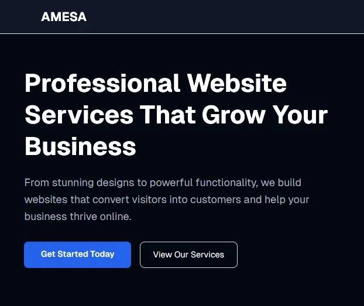
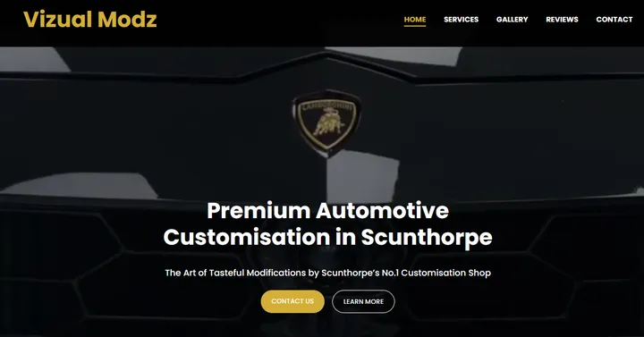
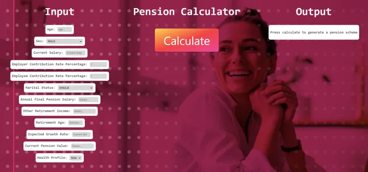
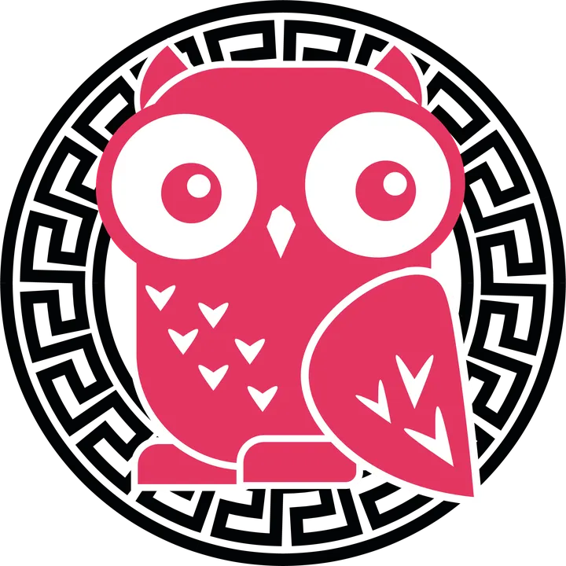
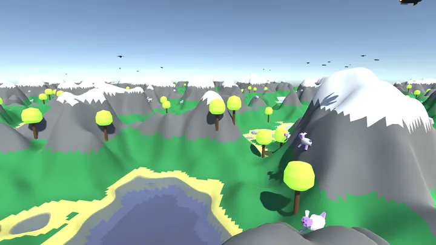
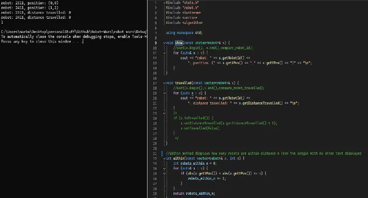
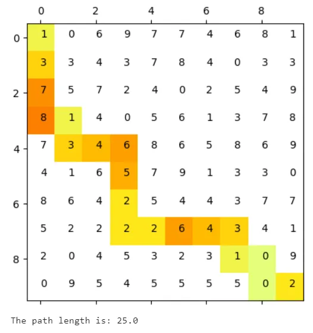
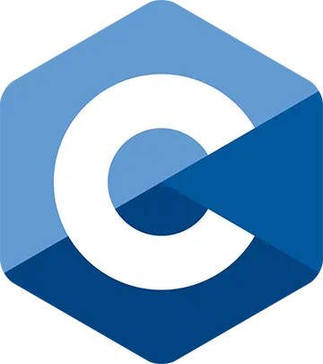

Software Engineer · Test & Automation · London
Hi, I'm Marko.
I've spent 3+ years testing embedded C++, building REST APIs and automating away manual work, most recently on TfL's Oyster card readers. In my own time I make games, and my Unreal Engine wizard game is about to launch.
Open to SDET, automation and backend roles
Projects
-
Personal
Wizard game Releasing soon
My spell-casting wizard game built in Unreal Engine, in the final stretch before release.
-
Personal
Gigabros In progress
A mobile top-down shooter with twin-stick touch controls, weak-point aiming, elites and bosses.
-
Personal
BrickBreaker4 In progress
A 1–4 player co-op roguelike brick breaker, local or online. The arena grows every round, bricks drop power-ups and chests, and a shop appears every 10 rounds. Online play uses a host-authoritative model over Unity Relay.
-
Personal
Pitcher In progress
A first-person spin-throwing game with generated levels across themed worlds, backed by automated determinism and solvability tests.
-
Personal
VoxelWorld In progress
An optimised, infinite voxel world: Burst-compiled greedy meshing with 12-byte vertices, near-to-far chunk streaming with LODs, pooled memory and a floating origin.
-
Personal
Family Tree app In progress
A private family tree you build by tapping people and adding relatives. Installable on a phone, works offline in the browser or syncs through Supabase.
-
Personal
MatchClips In progress
Tracks players in football match footage and cuts the key moments into clips.
-

Client
Amesa website Done
A live client site built with Next.js, React, TypeScript and Tailwind, with a backend API for contact form submissions.
-

Client
VizualModz website Done
A client site with EJS templates on a Node.js and Express backend that handles contact form submissions.
-

Sparta Global client demo
Pension calculation API Done
A full-stack pension calculator demoed to Legal & General: Spring Boot REST API with a React front end.
-

Sparta Global client demo
AI front-end chatbot Done
Front end and back end of an AI chatbot (GPT-4 via the Athena API) for Sparta Global's Athena cohort.
-

University · dissertation
Procedural World Generator Done
A procedurally generated 3D world that uses Perlin noise, threading and LODs to build terrain as you move around the map.
-

-

University
Python pathfinding Done
Compares naive, Dijkstra's and weighted pathfinding on a grid of chosen or random size, in a Jupyter notebook.
-
Personal
Vulkan voxel engine Shelved
A voxel engine on Vulkan, GLM and GLFW. Shelved to make room for other priorities.
-

Personal
C game engine Shelved
A game engine in C to learn the fundamentals. Shelved to make room for other priorities.
Experience
3+ years across embedded systems testing, REST APIs, CI/CD and reporting automation, in Agile and Waterfall teams.
-
Oct 2024 – Jun 2026
Software Development Engineer in Test
Cubic Transportation Systems · via Sparta Global · HINA, TfL Oyster card readers
- Tested and supported C++ embedded software on Unix/Linux.
- Wrote Python and Bash scripts for test execution and automation.
- Ran test cases, results and defects in TestRail, working with Jenkins and Artifactory build and release pipelines.
- Investigated defects from system logs, reproduced issues and reported findings to developers.
-
Apr 2024 – Oct 2024
Software Consultant
Sparta Global · internal projects
- Designed and presented a pension calculation API for Legal & General (Java, Spring Boot, React).
- Built front end and back end of an AI chatbot for the Athena cohort.
- Java test automation training: Selenium, Cucumber/Gherkin, RestAssured.
- Represented Sparta Global at school outreach events.
-
Feb 2023 – Apr 2024
Software Developer
Civil Aviation Authority · via Sparta Global
- Automated web form testing with C# and Selenium, cutting manual testing.
- Replaced legacy Cognos Impromptu reports with Power BI dashboards, Paginated Reports and Excel/VBA.
- Set up SharePoint for report delivery and built team performance dashboards from Azure DevOps data.
-
Nov 2022 – Feb 2023
Software Consultant / Developer
Sparta Global · training
- 3-month C# programme: .NET 6, ASP.NET Core, Entity Framework, LINQ.
- Built and tested REST APIs in C# and Spring Boot with NUnit/JUnit, Moq/Mockito and Cucumber.
-
2021 – 2022
Earlier roles
- Freelance Junior Web Developer, BeoKomp (Feb–Jul 2022): bespoke WordPress sites.
- IT Assistant / Automation Tester, Abercrombie & Kent (May–Jul 2021): PowerShell and Selenium test automation, Active Directory reporting scripts, Power BI reports.
Education
BSc Computer Science
City, University of London · 2019 – 2022
Modules include data structures & algorithms, OO analysis & design, networking and software engineering. Final project: 3D procedural world generation in Unity.
A-levels: Maths, Chemistry, Computer Science.
Coaching
Coach at Barnes FC.
I play semi-professional football and now coach alongside it: planning sessions, explaining things clearly and helping a team improve.
Skills
- Languages
- Testing
- APIs & backend
- CI/CD & DevOps
- Systems
- Reporting
- Games & graphics
- Practices
About
I like tooling that removes manual overhead, and I like building things end to end, from test frameworks and APIs to my own games.
Outside work I play semi-professional football and coach at Barnes FC. I think a well-rounded life makes me a better problem solver and teammate.
Languages
English (fluent) · Bosnian / Croatian / Serbian (native)
Interests
Contact
The quickest way to reach me is email or LinkedIn.